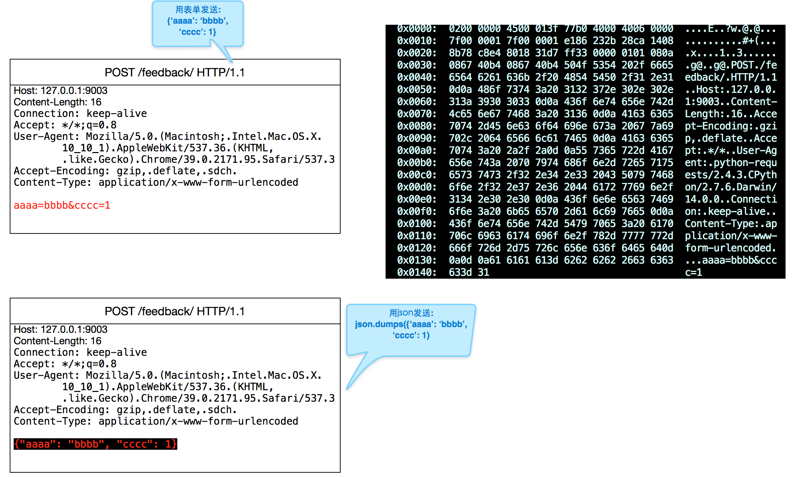
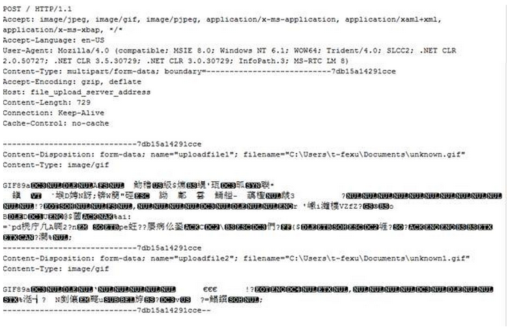

http¶
GET¶
以下是用chrome 浏览器请求 django server的抓包结果

总结:
- GET请求的参数， 是放在请求行里的
- 请求中得换行是 0d0a, 空格是 20
- http请求是由服务端先close, 最后服务端维护2MSL
POST¶
POST发送数据时，分为 表单 和 JSON 两种，以下是两种的区别
表单 vs JSON¶
到底是使用 表单 还是 json 发送数据呢，其实区别不大。如果你要传输的数据有很强的格式，如:
a = b
c = [1,2,3]
d = {a:b
c:d}
那么最好用 json 方式来传输数据；如果你要传输的数据很简单，就用 表单 格式吧, 相关连接
上传文件¶
用post上传文件时， 文件数据是放在请求体内的，并不是放在首部。但是首部会指明文件数据从请求体哪个字节开始, 下面就是 一个客户端上传文件的请求:
Warning
上传文件的时候，必须用multipart格式(非www-form-data), 并且其他数据必须用表单，不能用JSON,参见: http://www.faqs.org/rfcs/rfc2388.html
其中， Content-Type: multipart/form-data; boundary=---------------------------7db15a14291cce 说明 了这个请求是“multipart/form-data”格式的，且“boundary”是 “—————————7db15a14291cce”这个字符串。
不难想象，“boundary”是用来隔开表单中不同部分数据的。例子中的表单就有 2 部分数据， 用“boundary”隔开。“boundary”一般由系统随机产生，但也可以简单的用“————-”来代替。 紧接着 boundary 的是该部分数据的描述。
接下来才是数据。
FAQ¶
python requests 库的timeout作用:
requests 发http请求的时候，timeout参数并不是整个请求的超时，而是目标服务器没有响应的时间。例如:
requests.get('http://www.google.com', timeout=2)
如果没有开vpn, 这个请求也不会2秒后报错， 因为大部分时间block 在DNS查询， 这步查询不受requests 的timeout影响。